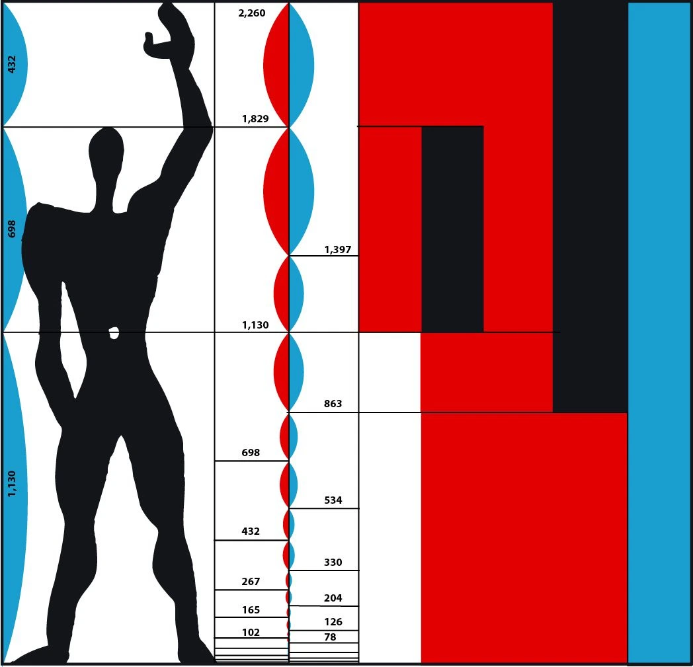
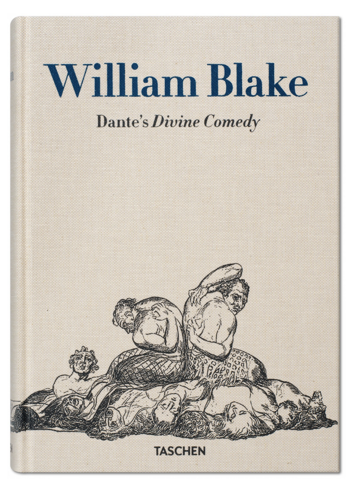
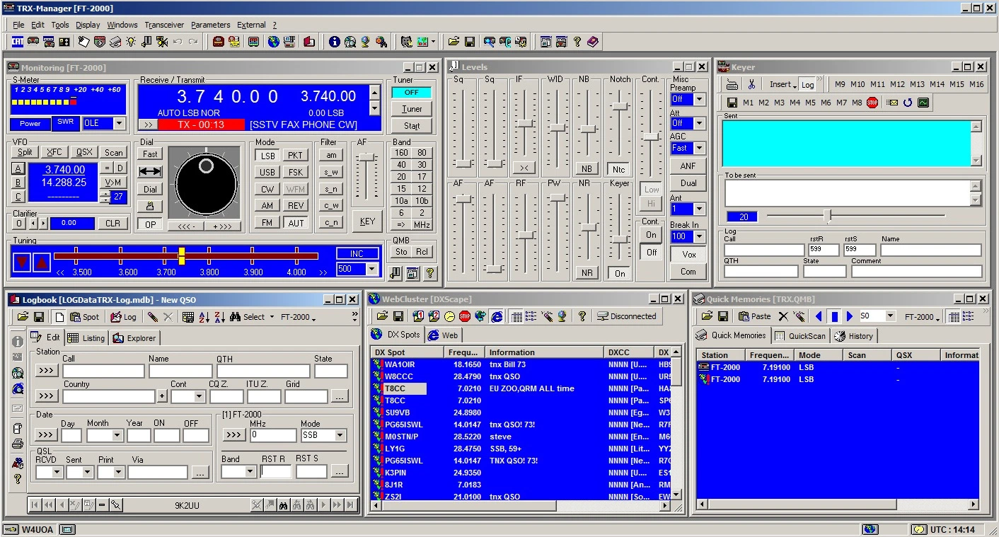
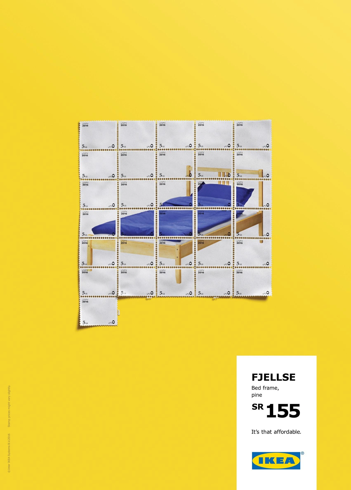
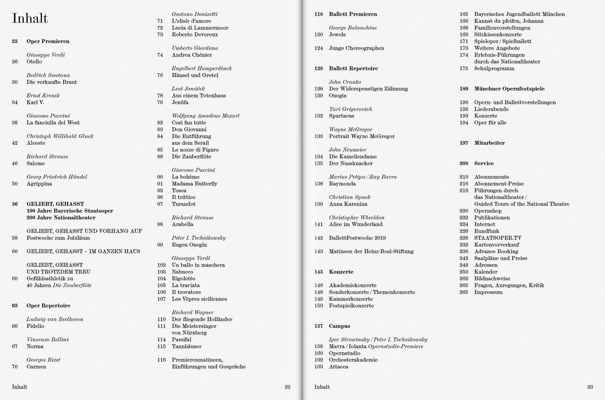
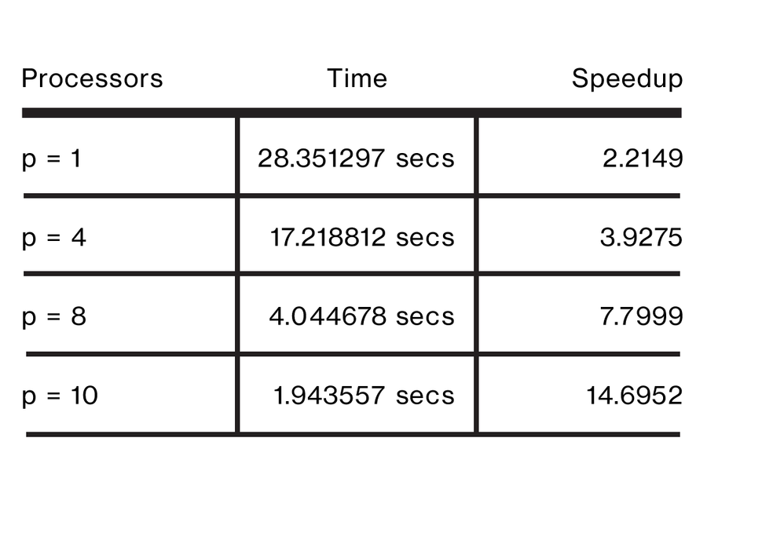
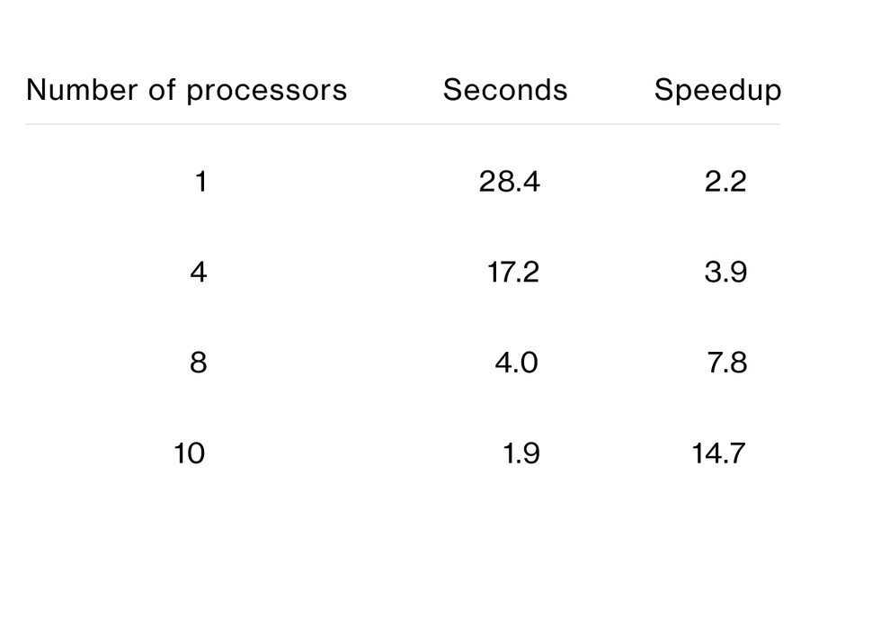
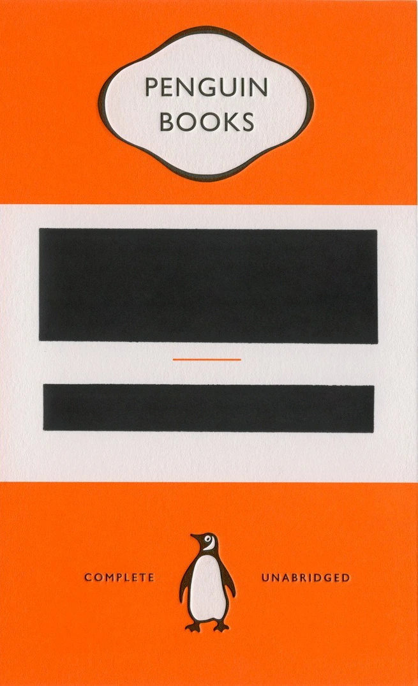

“Write freely and as rapidly as possible and throw the whole thing on paper. Never correct or rewrite until the whole thing is down. Rewrite in process is usually found to be an excuse for not going on. It also interferes with flow and rhythm which can only come from a kind of unconscious association with the material.” — John Steinbeck, writer. A letter to his friend Robert Wallsten, 1948
“Never send a letter or a memo on the day you write it. Read it aloud the next morning—and then edit it.” — David Ogilvy, founder of advertising agency Ogilvy & Mather. How to Write, 1982
Designer as writer
Stas Aki
2014
Draft, then polish.When you draft, it is still crucial to get right the key details. At the end of the day, both design and writing are ways to communicate. The utmost is to stay faithful to the meaning. For communication clarity is important, and there are rules to guarantee it. Unclear design, as well as unclear speech, can become dangerous. “Language is politics,” so is design.
Let’s begin with the sense of flow that is known to both designers and writers. At the beginning of a new project—be it a poster, website, or book—one need not be interrupted by polishing and petty work, trying to create something big all at once. For instance, a lot of writers recommend making no corrections until you are finishing, whether a poem or a chapter of a book.Yet there’s more to writing and design than this. Essentially, there are two phases of both writing and designing: draft and polish. After the whole thing is roughly assembled in a flash of inspiration, you must take a break, change the pace, and refine the details.

Modulor by Le Corbusier, 1948

“When it’s time to work again, always start by reading what you’ve written so far. The best way is to read it all every day from the start, correcting as you go along, then go on from where you stopped the day before. When it gets so long that you can’t do this every day read back two or three chapters each day; then each week read it all from the start. That’s how you make it all of one piece.” — Ernest Hemingway, writer. Esquire article, 1935
Earlier I stated that, while drafting, one shouldn’t stop and get distracted by too many small details. Yet it’s also important to select certain details carefully from the beginning because the wrong choices can lead to a whole that’s dysfunctional and weak, which no amount of polishing can correct.
For a writer, these crucial details are usually certain words in key parts of the text. In design, these correspond to choosing the right typefaces. Good typefaces are generally thought to be the foundation of a good layout. “The golden rule is not a rule of grammar or syntax. It concerns less the arrangement of words than the choice of them. Arrangement is of course important, but if the right words are used they generally have a happy knack of arranging themselves.” — Sir Ernest Gower, writer. Plain Words, 1948
“Even for a book on Paul Klee, for instance, it does not seem right to use an ordinary industrial sanserif. Its poverty of expression will humiliate the subtlety of this painter. And to set a philosopher or a classical poet in this ostensibly modern font is out of the question.” — Jan Tschichold, book designer. The Form of the Book, 1975
Earlier I stated that, while drafting, one shouldn’t stop and get distracted by too many small details. Yet it’s also important to select certain details carefully from the beginning because the wrong choices can lead to a whole that’s dysfunctional and weak, which no amount of polishing can correct.
For a writer, these crucial details are usually certain words in key parts of the text. In design, these correspond to choosing the right typefaces. Good typefaces are generally thought to be the foundation of a good layout. “The golden rule is not a rule of grammar or syntax. It concerns less the arrangement of words than the choice of them. Arrangement is of course important, but if the right words are used they generally have a happy knack of arranging themselves.” — Sir Ernest Gower, writer. Plain Words, 1948
“Even for a book on Paul Klee, for instance, it does not seem right to use an ordinary industrial sanserif. Its poverty of expression will humiliate the subtlety of this painter. And to set a philosopher or a classical poet in this ostensibly modern font is out of the question.” — Jan Tschichold, book designer. The Form of the Book, 1975

William Blake. Dante's Divine Comedy. Taschen, 2017
Araki by Araki, Taschen, 2014
“Select the specific and concrete word rather than general and abstract,” advices Handbook of Writing for the Mathematical Sciences by Nicholas J. Highamt. “Avoid wordiness: make every word count; omit words or phrases that add nothing to the meaning.” “Choose faces that suit the task as well as the subject,” says Robert Bringhurst , the author of an authoritative book on typography The Elements of Typographic Style.
Why are words and typefaces so important? Because the very idea of both writing and design is based on the existence of something underneath that needs to be exclaimed. There’s a meaning to be told, and the process of writing or designing is only a way to exclaim this meaning. That’s why wrong choice is fatal: it makes the creation contradict its own meaning from the very start, and thus beyond repair. Everything should help to convey the meaning in the first place. All the decoration is of secondary importance.
Concluding his rules for good writing in the essay Politics and the English Language, George Orwell states: “What is above all needed is to let the meaning choose the word, and not the other way about.” Compare it with the principle “Form follows function,” associated with 20th century modernist architecture and industrial design, when the shape of a building or object should be based upon its intended function or purpose.
Why are words and typefaces so important? Because the very idea of both writing and design is based on the existence of something underneath that needs to be exclaimed. There’s a meaning to be told, and the process of writing or designing is only a way to exclaim this meaning. That’s why wrong choice is fatal: it makes the creation contradict its own meaning from the very start, and thus beyond repair. Everything should help to convey the meaning in the first place. All the decoration is of secondary importance.
Concluding his rules for good writing in the essay Politics and the English Language, George Orwell states: “What is above all needed is to let the meaning choose the word, and not the other way about.” Compare it with the principle “Form follows function,” associated with 20th century modernist architecture and industrial design, when the shape of a building or object should be based upon its intended function or purpose.
Dish Doctor, designed by Marc Newson, 1998
Once we accept that there is a meaning to be told, it’s useful to more fully engage with the metaphor of communication. That is, in both writing and design there is not only a message but one who sends the message—as well as one that receives it. There’s thought to be a common code that both of them understand; and if they don’t, then the communication fails. That’s why both designer and writer must keep in mind who their “readers” are, and what “language” they speak.
“A difficulty in imagining what it is like for someone else not to know something that you know,” writes Steven Pinker, cognitive psychologist and linguist in The Sense of Style, 2014. “The key is to assume that your readers are as intelligent and sophisticated as you are, but that they happen not to know something you know.”
“One of the most important characteristics of good design is understanding,” writes design thinker, company advisor, professor Don Norman in his book The Design of Everyday Things. “Engineers (designers) are trained to think logically. As a result, they come to believe that all people must think this way, and they design their machines accordingly.
..The problem with the designs of most engineers is that they are too logical. We have to accept human behavior the way it is, not the way we would wish it to be. ...Consider the door. There is not much you can do to a door: you can open it or shut it. Suppose you are in an office building, walking down a corridor. You come to a door. In which direction does it open? Should you pull or push, on the left or the right? Maybe the door slides. If so, in which direction? I have seen doors that slide up into the ceiling. A door poses only two essential questions: In which direction does it move? On which side should one work it? The answers should be given by the design, without any need for words or symbols, certainly without any need for trial and error.”
“A difficulty in imagining what it is like for someone else not to know something that you know,” writes Steven Pinker, cognitive psychologist and linguist in The Sense of Style, 2014. “The key is to assume that your readers are as intelligent and sophisticated as you are, but that they happen not to know something you know.”
“One of the most important characteristics of good design is understanding,” writes design thinker, company advisor, professor Don Norman in his book The Design of Everyday Things. “Engineers (designers) are trained to think logically. As a result, they come to believe that all people must think this way, and they design their machines accordingly.
..The problem with the designs of most engineers is that they are too logical. We have to accept human behavior the way it is, not the way we would wish it to be. ...Consider the door. There is not much you can do to a door: you can open it or shut it. Suppose you are in an office building, walking down a corridor. You come to a door. In which direction does it open? Should you pull or push, on the left or the right? Maybe the door slides. If so, in which direction? I have seen doors that slide up into the ceiling. A door poses only two essential questions: In which direction does it move? On which side should one work it? The answers should be given by the design, without any need for words or symbols, certainly without any need for trial and error.”
‘Norman’ door: Pull or push? From left or right side?
Much of the difficulty that we have with computers and related devices is due to poor interface design rather than to any complexity inherent to the task or to any lack of effort or intelligence on the part of users. — Jef Raskin, human–computer interface expert. The Humane Interface, 2000

UI of TRX-Manager software—program for radioamateurs. Its PDF Manual is 400 pages!
The language metaphor opens a lot of pathways to follow. I’ll focus on clarity techniques. That is, both writer and designer need to be clear and lessen any potential confusion for their reader (or viewer). That’s where the analogy between writing and design becomes operational: there are explicit rules in writing to heighten clarity, which are applicable in design, too.
(1) Given-then-new
“English syntax demands subject before object. Human memory demands light before heavy. Human comprehension demands topic before comment and given before new,” writes Steven Pinker. “English language has a clear sentence structure: known fact comes in the beginning of the sentence, the new information comes in the end.”
“Build your idea, piece by piece, out of concepts that your audience already understands,” advices the head of TED Chris Anderson in his TED's secret to great public speaking.
“Every paragraph should amplify the one that preceded it,” writes William Zinsser in On Writing Well. “But take special care with the last sentence of each paragraph—it’s the crucial springboard to the next paragraph.”
“Hence, the special emphasis on the end of a sentence and a paragraph. Place the emphatic words of a sentence at the end,” recommends William Strunk. Consider how most posters are laid out: with information arranged left-to-right and top-to-bottom so the viewer can digest it piece by piece (a final dot—a company logo—is often placed in the bottom right corner). Or think of a video ad, where events are developed in given-then-new order, resulting in a cumulative meaning.
(1) Given-then-new
“English syntax demands subject before object. Human memory demands light before heavy. Human comprehension demands topic before comment and given before new,” writes Steven Pinker. “English language has a clear sentence structure: known fact comes in the beginning of the sentence, the new information comes in the end.”
“Build your idea, piece by piece, out of concepts that your audience already understands,” advices the head of TED Chris Anderson in his TED's secret to great public speaking.
“Every paragraph should amplify the one that preceded it,” writes William Zinsser in On Writing Well. “But take special care with the last sentence of each paragraph—it’s the crucial springboard to the next paragraph.”
“Hence, the special emphasis on the end of a sentence and a paragraph. Place the emphatic words of a sentence at the end,” recommends William Strunk. Consider how most posters are laid out: with information arranged left-to-right and top-to-bottom so the viewer can digest it piece by piece (a final dot—a company logo—is often placed in the bottom right corner). Or think of a video ad, where events are developed in given-then-new order, resulting in a cumulative meaning.

Print advertisement created by Ogilvy, United Arab Emirates for IKEA
(2) Keep related words together
As Strunk & White put it, “The position of the words in a sentence is the principal means of showing their relationship. The writer must therefore, so far as possible, bring together the words, and groups of words, that are related in thought, and keep apart those which are not so related.” For instance, the relative pronoun should come, as a rule, immediately after its antecedent: There was a look in his eye that boded mischief. → In his eye was a look that boded mischief.
This principle is fully applicable to design with just one word changed: keep related elements together.
As Strunk & White put it, “The position of the words in a sentence is the principal means of showing their relationship. The writer must therefore, so far as possible, bring together the words, and groups of words, that are related in thought, and keep apart those which are not so related.” For instance, the relative pronoun should come, as a rule, immediately after its antecedent: There was a look in his eye that boded mischief. → In his eye was a look that boded mischief.
This principle is fully applicable to design with just one word changed: keep related elements together.

Bavarian State Opera Season Guide (C) Bureau Borsche
Amsterdam's Schiphol airport signage (C) Van Beem & Van Haagen
(C) photo: Georges Zigrand
(3) Omit needless words
Strunk & White again: “Omit needless words. Vigorous writing is concise. A sentence should contain no unnecessary words, a paragraph no unnecessary sentences, for the same reason that a drawing should have no unnecessary lines and a machine no unnecessary parts. Example: This is a subject which can be changed to this subject.”
Hodge’s Harbrace College Book restates the same principle in other words: “Unless you are repeating intentionally for emphasis avoid careless or needless repetition of words and ideas” and illustrates it with the following example: “Needless: In 1975 the Steelers beat the Vikings; in 1976 the Steelers beat the Cowboys. → Concise: In 1975 the Steerers beat the Vicings; in 1976, the Cowboys.””
The same holds true in design. In the book The Visual Display of Quantitative Information, data visualization designer Edward Tufte introduced the data-ink ratio concept, which is the proportion of ink devoted to the non-redundant display of data-information.
From this, Tufte derives one of his most famous principles: “Erase non-data-ink, within a reason. Ink that fails to depict statistical information does not have much interest to the viewer of a graphic; in fact, sometimes such non-data-ink clutters up the data, as in the case of thick mesh of grid lines.”
Strunk & White again: “Omit needless words. Vigorous writing is concise. A sentence should contain no unnecessary words, a paragraph no unnecessary sentences, for the same reason that a drawing should have no unnecessary lines and a machine no unnecessary parts. Example: This is a subject which can be changed to this subject.”
Hodge’s Harbrace College Book restates the same principle in other words: “Unless you are repeating intentionally for emphasis avoid careless or needless repetition of words and ideas” and illustrates it with the following example: “Needless: In 1975 the Steelers beat the Vikings; in 1976 the Steelers beat the Cowboys. → Concise: In 1975 the Steerers beat the Vicings; in 1976, the Cowboys.””
The same holds true in design. In the book The Visual Display of Quantitative Information, data visualization designer Edward Tufte introduced the data-ink ratio concept, which is the proportion of ink devoted to the non-redundant display of data-information.
From this, Tufte derives one of his most famous principles: “Erase non-data-ink, within a reason. Ink that fails to depict statistical information does not have much interest to the viewer of a graphic; in fact, sometimes such non-data-ink clutters up the data, as in the case of thick mesh of grid lines.”

Cluttered table

Improved
“Design isn’t crafting a beautiful textured button with breathtaking animation. It’s figuring out if there’s a way to get rid of the button altogether,” says Edward Tufte.
A designer got rid of the case for the handle kepting just light travel cap for the top part of the brush.
(4) Clichés and Memes
“Cliché is at the root of audience dissatisfaction,” writes scriptwriter Robert McKee, “and like a plague spread through ignorance, it now infects all story media.”
“Never use a metaphor, simile, or other figure of speech which you are used to seeing in print,” advices George Orwell.
“Why is so much writing so hard to understand? Why must a typical reader struggle to follow an academic article, the fine print on a tax return, or the instructions for setting up a wireless home network?” The striking thing is that opaque prose is a deliberate choice, according to Steven Piker. “Bureaucrats and business managers insist on gibberish to cover their anatomy. Plaid-clad tech writers get their revenge on the jocks who kicked sand in their faces and the girls who turned them down for dates. Pseudo-intellectuals spout obscure verbiage to hide the fact that they have nothing to say.”
When designers have nothing to say they wrap their designs into memes.
“Cliché is at the root of audience dissatisfaction,” writes scriptwriter Robert McKee, “and like a plague spread through ignorance, it now infects all story media.”
“Never use a metaphor, simile, or other figure of speech which you are used to seeing in print,” advices George Orwell.
“Why is so much writing so hard to understand? Why must a typical reader struggle to follow an academic article, the fine print on a tax return, or the instructions for setting up a wireless home network?” The striking thing is that opaque prose is a deliberate choice, according to Steven Piker. “Bureaucrats and business managers insist on gibberish to cover their anatomy. Plaid-clad tech writers get their revenge on the jocks who kicked sand in their faces and the girls who turned them down for dates. Pseudo-intellectuals spout obscure verbiage to hide the fact that they have nothing to say.”
When designers have nothing to say they wrap their designs into memes.
Screenshots of designer's portfolios from behance.com and dribbble.com
There is also an ethical subtext to these rules, acknowledged by certain practitioners in the fields of writing and design. The gist of it is: that which doesn’t heighten clarity, fosters the potential for malice.
This is how George Orwell stated it in his 1946 essay Politics and the English Language: “A scrupulous writer, in every sentence that he writes, will ask himself at least four questions: What am I trying to say? Which words will express it? What image or idiom will make it clearer? Is this image fresh enough to have an effect? And he will probably ask himself two more: Could I put it more shortly? Have I said anything that is avoidably ugly? But you are not obliged to go to all this trouble.
You can shirk it by simply throwing your mind open and letting the ready-made phrases come crowding in. They will construct your sentences for you—even think your thoughts for you, to a certain extent, and they will perform the important service of partially concealing your meaning even from yourself. It is at this point that the special connection between politics and the debasement of language becomes clear.”
Apply Orwell's words to design.
This is how George Orwell stated it in his 1946 essay Politics and the English Language: “A scrupulous writer, in every sentence that he writes, will ask himself at least four questions: What am I trying to say? Which words will express it? What image or idiom will make it clearer? Is this image fresh enough to have an effect? And he will probably ask himself two more: Could I put it more shortly? Have I said anything that is avoidably ugly? But you are not obliged to go to all this trouble.
You can shirk it by simply throwing your mind open and letting the ready-made phrases come crowding in. They will construct your sentences for you—even think your thoughts for you, to a certain extent, and they will perform the important service of partially concealing your meaning even from yourself. It is at this point that the special connection between politics and the debasement of language becomes clear.”
Apply Orwell's words to design.

Book cover of George Orwell's 1984. Penguin, designed by, David Pearson, 2016